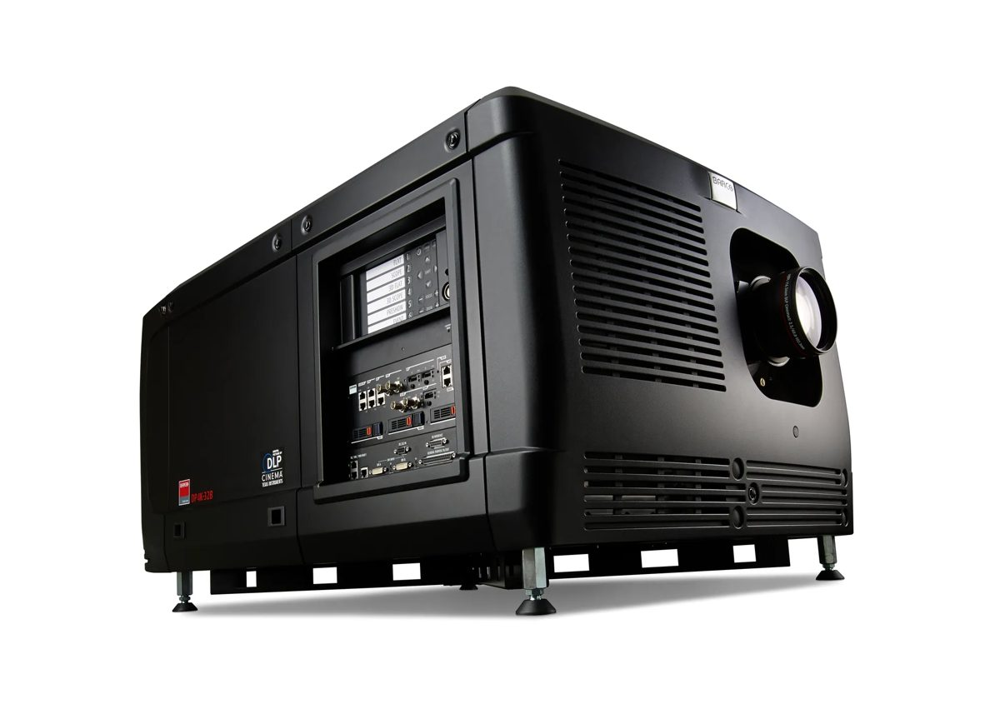

Technical Report
Suzuya Bagan Batu XXI
Pencatatan pekerjaan, meteran, dan pembelian Tim Teknikal dalam satu tempat.
Ruang kerja Tim Teknikal
Masuk ke akun Anda
Gunakan username dan password yang diberikan Admin.
Username
Password
Tampilkan
Masuk
© 2026 MK-Technical Suzuya Bagan Batu XXI
Dashboard
Technical Operations & Maintenance Management
-